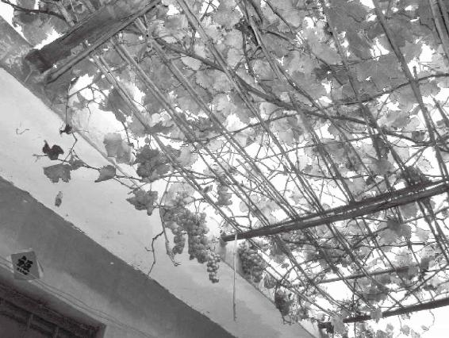
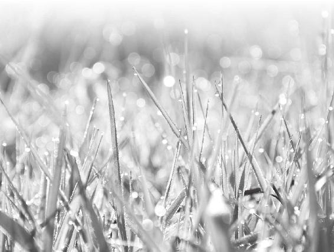
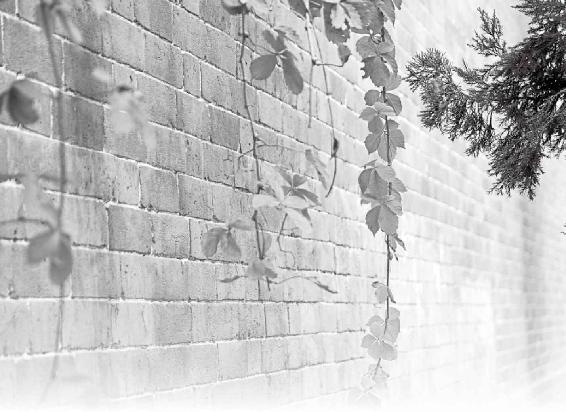
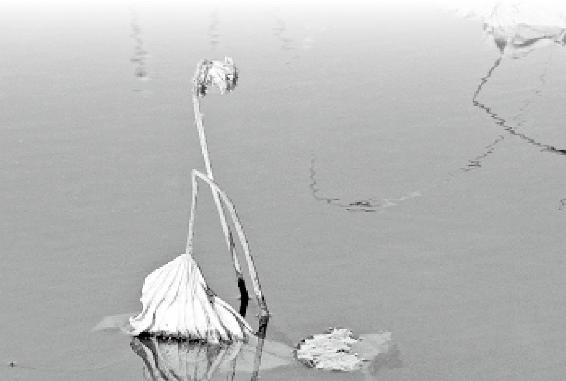
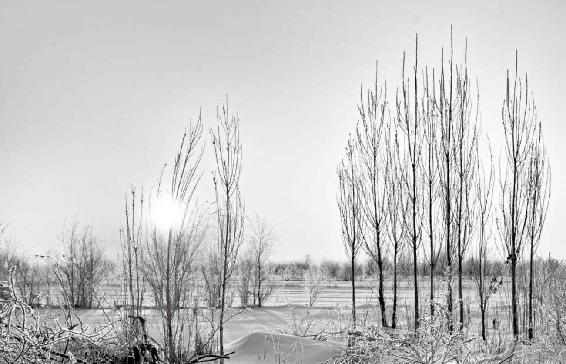
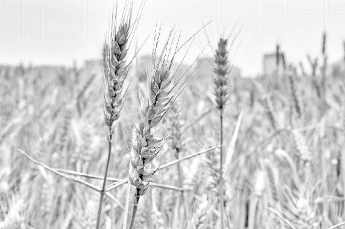
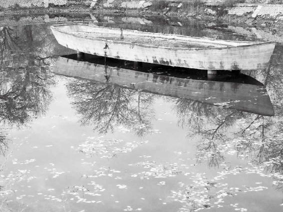

秋天要干的事：1.收获在春天、夏天生发、辛勤工作的成果；2.把自己发泄在外面的阳气和能量收回来；3.把自己的心神、心思也收回来。
如果你明知自己错过了天时还在那儿努力地工作，那你等来的只有一个结果——愁，拧不过了。
秋天想谈恋爱，除非你的阳气特别旺。
经文：
秋三月，此谓容平，天气以急，地气以明；早卧早起，与鸡俱兴，使志安宁，以缓秋刑，收敛神气，使秋气平，无外其志，使肺气清，此秋气之应，养收之道也；逆之则伤肺，冬为飧泄，奉藏者少。
要活就活得从容不迫
梁冬：“夏三月”之后我们讲“秋三月，此谓容平。”
徐文兵：“秋三月”是从立秋开始算起的，八月初到十一月初，而立秋的时间应该是在阴历的七月左右，阳历的八月七号或者八号。
秋三月有六气：立秋、处暑、白露、秋分、寒露、 霜降。
在夏天，有一个现象叫“天地气交”，天气很热，地上的水蒸气被蒸腾起来了，气温高，湿度也高，湿和热交织，所以大家整天都觉得粘腻不爽；可到了立秋那天，季节变化会很明显，你就感觉秋高气爽了。
虽然天气还很热，但空气中的湿度开始慢慢降低，你会觉得身体里的汗出来得畅快一些了。
从立秋开始算，秋三月有六个气，“秋处露秋寒霜降”，立秋以后是处暑，然后是白露、秋分、寒露和霜降，每气十五天。
在这三个月当中，我们要怎样调整自己的身心呢？《黄帝内经》说：“此谓容平”。
我们先来复习一下，春三月叫“发陈”，夏天是“蕃秀”，而秋天叫“容平”，什么叫“容平”？“容”是从容不迫。“平”是什么？
“容”是从容不迫。“平”是平和的意思。
梁冬：平和的意思。
徐文兵：春天是生，夏天是长，到秋天了，要讲究平和，活得从容不迫。什么叫“从容不迫”？现在的人老说活得很有压力，这压力就是“迫”，即使你不情愿，但背后总有一股力量推着你去做你不愿意做的某些事儿，这叫有“压力”。
在秋天，平时有准备，身体健康的人就能活得从容不迫。而不健康的人会悲、会愁得慌。

处暑 8月23日左右，炎暑彻底结束，情绪要慢慢收敛，凡事不躁进亢奋，也不畏缩郁结。
为什么秋天人要“容平”呢？容的前提是春生了，夏长了，到秋就该收了。春天的事我做了，夏天的事我也做了，到了秋天，我就应该很从容地等待着收获了。所以，那些平时有准备，身体健康的人就活得从容不迫。反观那些有压力，被压迫，被强迫的人，一般到秋天是惶惶不可终日，甚至会有一种悲悲切切的感觉。
什么叫“悲”？悲是一种分离时的心情。我们经常说“悲欢离合”，其实悲是离，欢是合。在秋天，不健康的人一方面表现为悲：树叶纷纷落下，自个儿却没有收成、没有结果，这叫“悲”；另外一种就是：春天没生，夏天没长，一到秋天，人就愁得慌。我们看“愁”字怎么写？
“何字合成愁，离人心上秋”。
梁冬：上面一个“秋”，下面是一个“心”字。
徐文兵：这说的就是秋天的那种心情。为什么会愁？错过了播种的季节，错过了夏天生长的季节，到了秋天，明知不可为而为之。要知道你错过了农时，就是下再大的工夫，你也锄地，也耙地，你也浇水，但天时错过了，照样没有收成。如果你明知自己错过了天时还在那儿努力地工作，那你等来的只有一个结果——愁，拧不过了。
如果你明知自己错过了天时还在那儿努力地工作，那你等来的只有一个结果——愁，拧不过了。
所以，秋三月，健康人的状态是“容平”，而不健康的人的状态是“愁悲”。
秋天是一个残酷无情的季节
梁冬：接下来是“天气以急，地气以明，早卧早起，与鸡俱兴”。
徐文兵：春天刮的风给人的感觉是：气是往上蒸腾的，是鼓舞生发的。到了秋天，“秋风扫落叶”，那是一种什么气？肃杀之气。
春天是发情的季节，而秋天是一个残酷无情的季节，是一个杀伐的季节。这个时候的气，给人一种急切的感觉。什么叫“切”？小刀子划脸，或者是切菜、切肉的时候，你能感觉到一股杀气。秋天是“天气以急”。
秋天是一个残酷无情的季节，是一个杀伐的季节。
梁冬：那什么叫“地气以明”呢？
徐文兵：进入秋天以后，太阳渐行渐远了，地上慢慢出现白白的露水，再冷一点，白霜也有了。
梁冬：“床前明月光，疑是地上霜。”这时候，大自然看上去给人一种明明白白的感觉。
徐文兵：李白为什么觉得月亮像霜一样呢？因为白晃晃的月光到秋天会给人一种冷的感觉，所以李白才这样怀疑。
秋天睡觉要早起早睡
梁冬：跟春夏不一样，到了秋天，我们的睡眠习惯应该改为“早卧早起”。
徐文兵：从秋天开始，特别是秋分过后，日子慢慢变得昼短夜长，这时我们可以早起，但是一定要早睡了。
秋天，特别是秋分过后，我们可以早起，但是一定要早睡了。
梁冬：早到什么时候？
徐文兵：“与鸡俱兴。”
徐文兵：这个节奏要跟鸡，跟鸟的生活节奏一样。请问鸡什么时候睡觉？
梁冬：坦白地说，现在很多人看到的鸡都在超市里面。
徐文兵：有一种病叫“雀盲症”，什么症状呢？太阳一落山，人的眼睛就跟鸟一样看不见东西了。所以一到太阳落山，鸟儿就早早地归巢，或者是栖在树上不飞了。这个时候你去睡觉，这叫跟鸡、鸟同节奏。
现在医学发现，“雀盲症”跟维生素A的缺乏有关。古代中医认为，秋天属金，肝属木，而金克木，所以秋天的气会抑制肝气、肝血的生发。肝开窍于目，所以这时候，你的视力就会有所下降，简单地说就是，秋天的金气克制了我们身体内的肝胆之气，这样就容易出现雀盲症。怎么办呢？炖点羊肝、猪肝补一补，吃上一阵子，眼睛就亮了。
为什么秋天人的视力会有所下降？
现代医学又发现：羊肝和猪肝里面的维生素A含量最高，这就和中医讲的以脏补脏的道理互相得到了印证。
梁冬：现在鸡、鸟都睡得比较晚，是吧？
徐文兵：现在都市的光污染很严重，很多鸟误以为太阳还没落。为什么“月明星稀，乌鹊南飞”？月亮特别亮的时候，鸟儿感觉天好像还亮着，它还能飞，其实那是假象。
现在都市的光污染很严重，很多鸟误以为太阳还没落。为什么“月明星稀，乌鹊南飞”？月亮特别亮的时候，鸟儿感觉天好像还亮着，它还能飞，其实那是假象。
梁冬：话说回来，现在很多人都在做准分子手术，就割那个眼睛，治近视眼，这种手术适合在春天还是在秋天做呢？
徐文兵：首先我反对这种手术。
梁冬：如果是不得不做的话？
徐文兵：不得不做的话，应该是趁着春天去做，因为手术毕竟是在摧残自己的眼睛，所以你要选在眼睛气血比较足的时候去做。
梁冬：春天，眼睛的修复功能比较强。
徐文兵：要是赶在秋天，肃杀之气来了，你再给眼睛划上一刀，那无异于雪上加霜。
梁冬：顺便提醒大家：如果不得不做准分子手术的话呢，最好春天去做。
该收心的时候不收，就会活在恐惧中
徐文兵：有句老话叫“鸡犬不宁”，请问什么叫“鸡犬不宁”？
梁冬：我发现一个现象，属鸡的人跟属狗的人在一起真的会打架。
徐文兵：鸡和犬打架，这样才有生活气息。我们说一个地方有人家，有人家的地方往往都有公鸡打鸣儿，“柴门闻犬吠，风雪夜归人”。鸡和狗都是人类的好伙伴。鸡是报鸣儿，早晨把你叫醒，我们说与鸡俱兴，你可以睡得早，跟鸡一样早睡，但是早晨鸡一打鸣儿你可以起来，闻鸡起舞对吧。
你可以睡得早，跟鸡一样早睡，但是早晨鸡一打鸣儿你可以起来，闻鸡起舞。
梁冬：话说回来，“鸡犬不宁”中的宁什么意思？
徐文兵：我们经常说安定、安宁、宁静。我曾问过一个人，什么叫“宁”？他说是静的意思。我说静是静，宁是宁。很多人解释“鸡犬不宁”时，就说鸡犬都不安静，鸡飞狗跳的。这是不对的！
你有房子，然后，你的心神收回来了，有饭吃，家里有孩子，这种回归的状态叫“宁”。
古人把女儿回娘家探亲叫什么？叫“归宁”。你看，“宁”的繁体字“宁”上面是个“宀”头，中间是一个“心”字，底下还有个“皿”字，代表饭碗，最下面还有个“丁”字，意味着人丁兴旺，“宁”代表了我们中国人的大团圆思想。你有房子，然后，你的心神收回来了，有饭吃，家里有孩子，这种回归的状态叫“宁”。
所以，“鸡犬不宁”是鸡不回窝、狗不回窝的意思。地震前的预兆都是鸡不进窝，往树上蹦；狗也不回窝，老在那儿叫。它们出于天赋的一种本能，预测到会有灾难来，所以都不回窝，这叫“鸡犬不宁”。
在秋风肃杀之气盛行的时候，你就该收心，不表达爱了。
现在，很多人一到晚上，就从这个酒吧挪到那个酒吧，就是不回家，这就是“不宁”的状态，从“鸡犬不宁”过渡到了人不宁。
梁冬：“与鸡俱兴”后就是“使志安宁”，这句话说得好。
徐文兵：“使志安宁”的意思是什么？让自己在春天生的、夏天没有压抑的那个志在秋天收一收，因为秋天是一个收敛锋芒的季节。如何做到这一点呢？你首先要安，“安”是什么？“安”是一种风水堪舆的说法，三面环山，一面有出口，易守难攻，这样的地方叫“安”。
“鸡犬不宁”是鸡不回窝、狗不回窝的意思。
梁冬：比如说西安、长安、临安、淮安。
徐文兵：所谓“志”是我们的心神，不是心脏。心脏在胸腔里面，肯定不会跑出来的。但我们的心神，也就是我们的志向是可以跑出来的。跑出来的时候，你不收的话，当秋天的肃杀之气来临之际，心神就会受到伤害，你就会产生莫名的恐、惧、怕这种不良的心理。可如果你知道收敛锋芒，收收自己的心神，就会心安而不惧。
到秋天了，不要锋芒毕露，这是收敛自己“志“的时候。
另外，“宁”就是说让心神回归到身体里。我在前面讲了，夏天是示爱的季节，“若有爱在外”，你要把那份感情流露出来。而到秋风一起、肃杀之气盛行的时候，你就该收心了，不表达爱了，要开始回归了，这就叫“使志安宁”。
“志”是我们的心神，不是心脏。
梁冬：这样看来，秋天不是一个谈恋爱的好季节。
秋天想谈恋爱，除非你的阳气特别旺。
徐文兵：除非你体内的阳气特别旺。我们讲的是常态，你看一到秋天，古代的很多文人骚客写的词全是悲凉、凄切的，比如“无边落木萧萧下”，“对潇潇暮雨洒江天，一番洗清秋。渐霜风凄紧，关河冷落，残照当楼”写的都是悲秋的心情，这是那些文弱的书生写出来的词。再比如说辛弃疾，他一辈子也想收复河山、恢复家园，但他与大势不匹配，自己徒有其心。你看他写的“少年不识愁滋味……为赋新词强说愁”，如今把愁的滋味识遍了，“欲说还休，却道天凉好个秋”，已经没有心思再说愁了，你说这种心态多么无奈。

白露 9月7日前后，天气转凉，早晨草木上有了露水。此时切忌锋芒毕露。
徐文兵：毛泽东就不一样，在秋天的橘子洲头，他“看万山红遍，层林尽染；漫江碧透，百舸争流。鹰击长空，鱼翔浅底，万类霜天竞自由。”那种肃杀之气对他根本没有一点影响，他照样是“霜叶红于二月花”。别的文人骚客看见落叶，产生的是悲切感，而他看到的是激烈澎湃。
别说秋天了，就是在冬天“山舞银蛇，原驰蜡象”时，毛泽东也看到了一派生机，“数风流人物，还看今朝”。
所以，人不能与人相比，咱是一个普通人，到了秋天就收收吧、歇歇吧。
人不能与人相比，咱是一个普通人，到了秋天就收收吧、歇歇吧。
梁冬：真是！以前学这个中学语文的时候都没有真的理解这些东西，好可惜。
徐文兵：老鹰和鸡不一样，如果你把心神收回来保护好的话，就能避免被自然界这种风刀霜剑的伤害。
秋天心头的情绪、情感要往回收
梁冬：“使志安宁”后，接着是“以缓秋刑，收敛神气”。
春天不是杀戮的时候，秋天才是。
徐文兵：从古到今，我们中国人都按照道家主张的顺应自然的思想来生活，所以，春天不是杀戮的时候，秋天才是行刑杀戮的季节。
梁冬：秋后问斩嘛！
徐文兵：一般来说，出去打猎都是在秋天，像清朝的官员们都是到承德的木兰围场去打猎，相当于现在的军事演习，要做给蒙古的王公们看。秋天属金，正是动刀、动兵的季节，所以狩猎相当于是缓和了秋天的杀伐之气对你的伤害。
秋天狩猎相当于是缓和了秋天的杀伐之气对你的伤害。
梁冬：“收敛神气”的意思就是说，你要把神气收敛回来。
秋天要干的事：1.收获在春天、夏天生发、辛勤工作的成果；2.把自己发泄在外面的阳气和能量收回来；3.把自己的心神、心思也收回来。
徐文兵：我们说春天要养生，夏天要养长，秋天是养收。“养收”首先要收获你在春天和夏天生发、辛勤工作的成果，这叫“收”。另外，就是要把自己放散、发泄在外面的阳气和能量收回来。此外，还要把自己的心神、心思也收回来，收敛神气。不过，神是神，气是气，两者是不一样的。
梁冬：那什么是“神”？什么是“气”？
徐文兵：“神”是“气”的最高境界。比如说一桶汽油，汽油本身是精，把它点着了，发出来的热和光是它的气。而点着后产生的那种漂亮的火焰，最顶端、最热烈的部分，我们可能叫它为“神”。
立秋以后，要做的第一件事就是贴秋膘。
作为一个人，我们有肉身，这是我们的精；我们去动作，去运化，这是我们的气；最后诞生了我们的思想、情绪和情感，那是我们的“神”。一到秋天，神和气都要收一收。
汽油燃烧后发出的光和热叫“气”，燃烧时最顶端、最热烈魅惑的部分叫“神”。

秋分 9月22或23日，气温逐日下降，天气肃杀，请不要发泄自己的能量，以免惹祸上身。
徐文兵：立秋以后，我们要做的第一件事就是贴秋膘。
“皮”是表皮，“肤”是人的皮下脂肪。
梁冬：广东话叫秋风起吃腊味……
徐文兵：夏天的时候，我们一般没什么胃口，为什么？因为体内的阳气都发散在体表，所以我们容易出汗，胃肠也相对虚冷，再加上天气潮湿、闷热，所以我们吃什么东西都没胃口。等到立秋以后，人体内的阳气就开始回缩、回敛，肠胃开始慢慢变得温热，就觉得在苦夏、疰夏时没有食欲的状态突然结束了，而且想吃点儿肉了。所以在立秋那天，北京人很讲究“贴秋膘”。
梁冬：“膘”是不是身上的肥油啊？
徐文兵：我们平时说马膘肥体壮的，但不能说人全身是膘，是吧！
梁冬：那“膘”是什么意思？
徐文兵：“膘”是一个“月”字边儿，加一个“票”字。人的皮下脂肪不能叫“膘”，应该叫皮肤的“肤”。“皮”和“肤”不一样，我们经常说肤如凝脂，“凝脂”是凝固的油。如果你没见过凝脂，那你炖猪肉的时候，上面那层凝固了的，又白、又亮，又细腻、又滑润的就是凝脂。
立秋以后，要做的第一件事就是贴秋膘。
我们形容美女皮肤好，其实皮好和肤好是两回事儿，皮是表皮，肤是指皮下的脂肪。
梁冬：所以说男女之间有了肌肤之亲，绝对不是零距离，那是负距离。
徐文兵：皮之亲、肤之亲和肌之亲、骨之亲，都不一样，所以肌肤之亲又有两个字，叫“朋友”。我经常问别人说：“他是你的朋还是你的友？”孔子说：“有朋自远方来，不亦乐乎？”却没说“有友自远方来，不亦乐乎”。
“朋”是什么意思？是两个“月”字组合在一起，“月”是啥意思？
梁冬：肉嘛。
徐文兵：肉挨肉。所以“朋”就是小时候的同学，中学时候的同学，经常你打我，我打你。在一块儿厮混，勾肩搭背、摩肩接踵，有肌肤之亲的人，说明关系非常亲密。
“朋”是勾肩搭背、摩肩接踵，有肌肤之亲的人；有共同志向、朝一个方向走的叫“友”。
那“友”是什么？有共同志向、朝一个方向走的叫“友”。一个发小突然从远方回来了，这叫“不亦乐乎”。我们有共同志向，可以正襟危坐、谈经论道的，那叫“友”。
所以，以后有人介绍自个女朋友的时候，要介绍这是你的“女朋”还是“女友”？“女朋”是指有了肌肤之亲的人。人跟人有了肌肤的接触以后，对他的心灵、思想都会产生一种很深的触动。现在，有些医生在治疗一些人的心理疾病时，突然发现这个人从小就缺乏拥抱。
我们老想通过谈话来解决人的心理问题，殊不知他身上的很多心理问题都来源于他的生理问题，包括来源于他的肌肤问题。
梁冬：人与人之间抱抱很重要。
人与人之间发自内心的拥抱很重要。
徐文兵：发自内心的拥抱很重要。
梁冬：抱一抱十年少。
徐文兵：古代的按摩、推拿，这是有肌肤之亲的，所以很多按摩科的医生容易出问题。
梁冬：为什么？
徐文兵：他跟他的患者有肌肤之亲，有一种无言的交流，很容易漩到另一个漩涡里头。所以我们医生在给异性治病的时候，必须边上有护士陪同，有第三者在场，这样就可以避免医生或者患者产生任何其他的邪念。
梁冬：很多女青年忙着减肥，殊不知最后落下了皱纹，因为没有那层弹性皮下脂肪的支撑了。
徐文兵：最后变成了鸡皮鹤发。什么叫“鸡皮鹤发”？是“有皮无肤”，她的皮很松，一提溜儿就抓起来了，这种人因为皮下没有脂肪，所以特别容易长皱纹。现在很多人喜欢做美容，包括做拉皮手术等，脸上的皮肤整得很光滑，但唯一掩饰不住衰老的就是脖子上的皱纹，那种下坠感，沟沟壑壑一出来，就是典型的“有皮无肤”。
很多人喜欢做美容，脸上的皮肤整得很光滑，但唯一掩饰不住衰老的就是脖子上的皱纹，那种下坠感，沟沟壑壑，就是典型的“有皮无肤”。
我治疗过几个病人，她们光顾着节食减肥，最后闹得皮下脂肪消磨掉了很多，都没有了脂肪那层“保温层”。这些女孩子，在坐公共汽车的时候还得带个棉垫，否则一屁股坐在塑料板凳上就会肚子疼。
我们说健康人叫“丰乳肥臀”——乳房里面、肥臀底下都是脂肪组织，都是储存能量、精血的“预备队”，你把这些东西都减掉了，结果寒气直接穿皮，入肌，入骨，最后到髓，把你凉得够呛。
现在的新地铁还不错，底下有个暖气设备，冬天坐的时候，椅子是暖的。
梁冬：飕飕冒暖风。
徐文兵：现代人很多开车，有些车设备挺好，坐垫是电加热的。如果大冬天特别冷的时候，你进到冷车里往那儿一坐，生生是热屁股贴着冷座椅，很冷的。所以这种小细节在生活中很重要。不少人说商场上细节决定成败，我觉得养生保健很多也是细节决定成败。
梁冬：都说“十男九痔”，这跟着凉有关系吗？
“痔”里面是个寺庙的“寺”字，就是停顿、停止的意思。痔疮跟肝的关系特别密切，是因为瘀血造成的。而“撮谷道”——提肛，对预防和治疗痔疮的效果非常好。
徐文兵：没有。痔是因为瘀血造成的，你看，“痔”里面是个寺庙的“寺”字，就是停顿、停止的意思。痔疮跟肝的关系特别密切，肝是主疏泄的，是推动血管里面的血运行的器官。很多人体内的肝血有郁结的毛病，而痔疮主要跟血液循环有关，所以在肛门附近会产生痔疮。我以前给大家讲过“撮谷道”，就是提肛的方法，这对预防和治疗痔疮的效果非常好。
另外，患有痔疮的人最忌讳喝酒、吃辣的，一吃就犯，而且非常痛苦，如坐针毡。

拳头收回来，打出去才更有力量
梁冬：“收敛神气”之后是“使秋气平，无外其志，使肺气清”。
徐文兵：我们说人在春天要“披发缓形，以使志生”，是要自由散漫的，而到秋天，则要拘谨收敛。
比如很多人喜欢穿紧身衣，但夏天太热，我们不至于穿；到了秋天，我们就可以穿紧身衣来紧紧身子，收敛一下自己；另外，在秋天肃杀之气很重的情况下，我们就不要向外去表露自己的心愿和志向了。
到了秋天，可以穿紧身衣来紧紧身子，收敛一下自己；另外，秋天肃杀之气很重，就不要向外去表露自己的心愿和志向了。
梁冬：这就是“无外其志”的意思。
徐文兵：我们说春天养肝，夏天养心，秋天是养肺的季节。说到肺，我们很自然地就会想到呼吸，那“呼”和“吸”，它们中间哪个对应的是收？
梁冬：应该是吸。吸是收，吸气嘛！
徐文兵：所以，我们可以趁着秋天“天气以急”的这个劲儿，做做深吸气，来清清肺里面的浊痰、粘液，让肺气通过呼吸、吐纳变得更加清，更加净。
梁冬：接下来是“此秋气之应，养收之道也”，这句话怎么解释？
徐文兵：你看我们到秋天要应秋，春天要应春，夏天要应夏。这么做的话，我们应了气的变化规律，能获得秋天的能量，这就是养收之道。
很多人是在生，在发，在长，却不知道收，不知道急流勇退。直到最后“咔嚓”一声死掉了才结束。
梁冬：养和收还不一样。
徐文兵：什么叫“养”？道家叫贵生，认为生命最为宝贵，所以我们要精心地伺候它，养护它。但很多人是在生，在发，在长，却不知道收，不知道急流勇退。直到最后“咔嚓”一声死掉了才结束。生命是有节奏、有节律的。你要是掌握好了这种起伏规律的话，你的生命就会走得更远。
做人或者做事都应该有一个收的阶段，把拳头收回来以后，打出去才更有力量。
而且，我们做人或者做事都应该有一个收的阶段，你把拳头收回来以后，你打出去就会更有力量。这绝对不是消极、退让，而是一种大智慧。
梁冬：“养收之道，逆之则伤肺。”
徐文兵：你在夏天要不这么做的话，就会伤心；秋天不这么做的话，就会伤肺。
秋天不学会“收”，就会伤肺。
秋天不学会收，冬天精气神就会漏
梁冬：接下来是“冬为飧（sūn）泄，奉藏（cáng）者少”。“飧”字有点意思。
徐文兵：“飧”就是说到了冬天会拉肚子，收不住了。冬天是闭藏、养肾的时候，肺又是肾的“妈妈”，因为金生水嘛。所以，如果你在秋天没打好基础，冬天你就会漏精、漏气、漏神。
梁冬：其实，我一直都不是很理解，什么叫做“金生水”？
秋天没打好基础，冬天人就会漏精、漏气、漏神。
徐文兵：关于“金生水”，古人讲的是“无中生有”，你看，他们炼丹服食的时候喝什么水？
古代人对水是很有研究的，很讲究。我们现代人只是化验、分析水里面含有什么物质，古代人却还要关心水里面的“气”是带着什么样能量的。
梁冬：信息。
徐文兵：对，信息和能量。有个故事叫“王安石三难苏学士”，其中的“一难”，就是让他从三峡过来的时候，带一瓶中峡的水用来泡茶。“君住长江头，我住长江尾，日日思君不见君，同饮一江水”。从这个简单的唯物主义理论来看，同一条江里的水是没什么区别的。但古代人除了观察到物质本身以外，还观察到了水背后所蕴含的能量。上峡、中峡、下峡三处峡谷的宽窄不一样，水流的湍急程度也不一样。王安石让苏学士取中峡的水，结果他光顾着看美景，一时间忘记了，等他想起这事的时候已经到了下峡地段，于是就地打了一瓶水给送了过去。
现代人只是化验、分析水里面含有什么物质，古代人却还要关心水里面的“气”是带着什么样能量的。
茶道：1.古人泡茶的时候是用阳水——天上的水，比如用雨水、雪水煮沸后来冲泡。2.地下水带有阴寒之气，重浊之气比较重，用来炖一些滋补阴液的药非常合适，但泡茶就不行。
王安石是喝茶高手，拿水一冲茶，就说这水不对，是下峡的水。为什么？因为气不一样。所以，古代人对水的研究很深。天上的水有它独特的气，具体说来就是阳气比较足。
徐文兵：因为茶性质阴寒，所以古代人泡茶的时候是用阳水，也就是天上的水，比如用雨水、雪水煮沸后来冲泡。古代还没有空气污染一说，所以天上的水比较干净，可以用来泡茶。《红楼梦》里面也说用从梅花上扫下来的雪化成水，煮开了去泡茶，那就更讲究了。
相反的地下水，比方说井水，用现在的话来说，就是矿物质含量比较高。中医认为地下水带有阴寒之气，重浊之气比较重。这种水用来炖一些滋补阴液的药非常合适，但是用来泡茶就不行，这样就是阴上加阴。有人就说：“我把水煮开了，不都一样吗？”那只是温度上发生了变化，水里面的气依然没变。所以，你看炖阿胶用的是什么水？
阿胶是一味非常好的滋补阴血的药，而阿胶之所以能炼成是因为东阿有一口古井。这口古井里的水特别阴，特别“重”，你盛一杯这样的水，上面放一枚硬币，它都能浮起来。中医认为阴气特别重的水，用它来炖驴皮，炖出来的胶效果最好。所以取阳性的水，还是取阴性的水，效果都不一样。
东阿有一口古井，里面的水特别阴，特别“重”，盛一杯这样的水，上面放一枚硬币都能浮起来。
古人喝水不像我们现代人那样傻喝。刚刚我也说了，阳水指的是天水，而阴水指的是地下水。那么中水也就是上不着天、下不着地的水，请问是什么水？
中水，也叫露水，上不着天、下不着地，是“金生水”的一个典型表现。
梁冬：露水。
徐文兵：你看北海公园有个琼岛，岛上有根汉白玉的柱子，上面站一个铜人，双手托起一个铜盘。干啥呢？承露。今天晚上，我们把这个“人”搬出去，它是金属制的。第二天早上过来一看，盘子里面晶莹透亮的一盘水。无中生有，哪来的？我们现在的理解就是金属的导热性比较好，凝聚在空气中的水蒸气遇冷后凝结成了露水，就存放在盘里。而古人的解释就是“无”中生个了“有”，这是金生水的由来。
梁冬：那肺对于身体里的水有没有帮助呢？
徐文兵：有。举个简单的例子，当你眼睛特别干燥的时候，除了滴眼药水、闭眼睛外，怎么才能让眼睛湿润起来呢？深吸一口气，打一个哈欠，然后泪液就出来了，眼睛马上就湿润了。
是什么推动这种津液产生的呢？肺气。再举个例子，我们家里都有茶壶吧？茶壶盖上都有个窟窿，那是干啥用的？
梁冬：漏气的？
徐文兵：你把那个窟窿堵住，水就倒不出来了。
梁冬：因为气压的问题。
眼睛特别干燥的时候，除了滴眼药水、闭眼睛外，深吸一口气，打一个哈欠，眼睛马上就湿润了。
徐文兵：负压的问题。茶壶上的窟窿一打开，空气进去，水就出来了。人体的津液是分散、滋润到身体各个器官的，当你吸进去空气，这就给体内的水液输送提供了一个动力，相当于金生水。所以，中医治疗里有一个方法叫“提壶揭盖”，就是说这个人尿不出来怎么办？中医不是帮他去治肾，而是用一些宣发肺气的药，让这个人能够从浅表呼吸自然恢复到深呼吸，之后他体内的水液自然就排出来了。这就好像把茶壶盖打开，让壶里面的茶水倒出来一样。
梁冬：谁说中国人不懂科学！
徐文兵：我们不但懂科学，还懂哲学，还懂玄学。
中国人不但懂科学，还懂哲学，还懂玄学。
秋天既然是收敛的季节，又跟肺是相对应的。那我们在秋天的饮食应该以什么味道为主呢？
梁冬：如果是收敛的话，应该以酸为主。
徐文兵：我说了春天要多吃辛散的食物，因为要鼓励自己“冒泡”，要发芽，要出头；而夏天，是激烈、奔放的季节，会不停地流汗，所以我们要适当补充体内的盐分；到了秋天，水果成熟了，而且大多是以酸味、甜味为主，我们不要放过；还有，一年四季我们都应该吃甜。
秋天，水果成熟了，这些酸味、甜味，我们不要放过。
本来秋天有一阵是秋高气爽的，但爽过头了就变成了“燥”。燥气是很伤人的，很多人一到这会就觉得皮干（不是“肤干”）、鼻子干，还有些人眼睛干，都是“燥”惹的祸。不过，自然界是公平的，所谓“一物降一物”，既然有燥气，自然就有克制它的东西比如水果出现。所以到秋天，我们要多吃水果。那既滋阴，又润燥的水果是什么？梨。
秋高气爽很舒服，但爽过头了就变成了伤人的“燥”，让人皮干、鼻子干，眼睛干。
梁冬：梨是白色的，正好对应“秋白”。
徐文兵：你如果出现了种种“燥”的症状，那就去吃一些水果。我上次说到了大家要少吃水果，其实我不是不让大家吃，而是不让大家吃不合时令的，也就是反季节的水果。
不要在春天里去吃一些酸不溜秋的水果，把自己给收敛住，除非你肝火太旺。到了秋天，你反而要拈酸吃醋，因为要生津润燥。
有一个成语叫“望梅止渴”。本来渴得不行了，我们说喝杯水吧，但是很多人喝完水照样渴，为什么？因为他不能将喝进去的水转化成自己的体液。可是，如果有人说那前面有一片梅林，树上结了很多梅子，大家就口里一酸，唾液出来了。生了津就润了燥，这是秋天的饮食规律。
所谓“一物降一物”，秋天有燥气，拈酸吃醋就可以生津润燥。
徐文兵：其实，秋天还是一个非常好的长头发的季节。
一定要少吃不合时令的反季节的水果。
梁冬：此话怎讲？
徐文兵：你看啊，所有的动物一到春天、夏天都脱毛，因为天气热了嘛。有个成语叫“明察秋毫”，还有一个成语叫“秋毫无犯”，什么叫“秋毫”？
秋天是一个非常好的促进毛发生长的季节。如果你不长头发，老掉头发，多吃点酸的东西，然后再补充其他的营养。
梁冬：就是动物在秋天长出来的小绒毛。
徐文兵：任何动物，包括人，知道天气要转冷了，立秋一过，身上就开始长出细细的绒毛。秋逐渐地深了，冬天来了，毛发就变得很粗、很壮，主要是用来保暖。
如果你不长头发，老掉头发，那进入秋天后就要多吃点酸的东西，然后再补充其他的营养，头发就没问题了，所以，秋天是一个非常好的促进毛发生长的季节。
另外，秋天也会有点小生机出现，就是我说的长膘，也是保暖用的。这其实是把神气收到体内，开始关注自己了。进入冬天后，我们更是要“若伏若匿，若有私意”，好好照顾自己了。
那在秋天，让自己长头发的最佳食材是什么呢？山药。
梁冬：为什么？应该是酸的东西才对呀。
徐文兵：你去嚼一嚼山药，看它是不是酸的？很多人说山药是补肾的，其实它是最好的补肺食材，白色。那要怎么吃？连皮儿吃，而且要带须吃。
让自己长头发的最佳食材是山药。它是最好的补肺食材。吃的时候要连皮儿吃，而且要带须吃。
梁冬：为什么？
徐文兵：这运用的是取类比象法。比方说，我们认为核桃长得像人的脑子，多吃就能补脑子。山药带着皮和须吃，就对你的头发有好处。
梁冬：事实上也的确是这样！所以，我们不得不承认中国人在很早以前就明白了“宇宙全息投影”这个概念。
梁冬：除了饮食外，《淮南子》里面说在秋天，我们应该穿白色的衣服，这是对的吗？
徐文兵：可以呀！春天穿青的、绿的、蓝的，夏天穿红的，秋天穿白的，冬天穿黑的。
梁冬：我看《淮南子》的时候，里面说古代君主的着服叫“礼”。而且这“礼”还包括你如何配合天气的变化来进行服饰的搭配。
四季穿衣之道：春天穿青的、绿的、蓝的，夏天穿红的，秋天穿白的，冬天穿黑的。
徐文兵：之所以叫“礼”，是因为他敬畏自然，这才设计一套礼仪制度去祭祀，去崇拜。但是现在的人都无礼，原因是什么？无畏。什么都不相信，老子天下第一。因为无知而无畏，最后就变成无礼了。
梁冬：反过来推，从无礼，我们也可以看出一个人的无知和无畏。我接触了很多老先生，我发现越是学问大的就越有礼，因为他越有知了。
古代君主的着服叫“礼”。现在的人都无礼。原因是无畏，什么都不相信，老子天下第一。因为无知而无畏，最后就变成无礼了。
徐文兵：我现在四十多岁了，看病是越来越谨慎，越来越小心了。这就跟开车一样，刚学会开车那会儿是愣头青，开车又生又猛。前面不能有车，有车就要超。有的司机开车的时间越长，越开越谨慎。因为他逐渐知道了很多东西。越不知道的时候，他越敢闯。包括我看病，我看过很多妇科病人，我一问对方例假，结果例假该来了却还没来，有些人就说：“你给我扎针吧”、“你给我开点什么药吧”。我说等一等，为什么？我怕她怀孕了。如果对方怀孕了，你却给人扎针，还用活血化瘀药，把胎儿打下来了怎么办？
病人说扎，我不扎，我说去查尿。一查没怀孕，我说查血。因为号脉感觉是怀孕的象，你要验证它，你不能说我感觉到你怀孕了，你还得有客观指标，一查血，怀孕了。这么谨慎，就保住了好几个孩子。
越是学问大的就越有礼，因为他越有知了。
《红楼梦》里面的尤二姐怀孕了，请了一个胡庸医来滥用虎狼药，生生把尤二姐怀的男孩子给打下来了。
梁冬：无量寿佛。
徐文兵：现在孩子长大了，家长带来一看，我说：“幸亏当年没扎你。”所以当你有知、有畏的时候，你处事就会越来越小心。现在有很多网友会在我的博客上留言，上来就说“我有××症状，要怎么诊断，徐大夫你给我开点药吧。”我心说这种情况下，我还真不敢开。越到我这年龄，处事就越小心了，归根究底是阳气衰了。
当你有知、有畏的时候，你处事就会越来越小心。
梁冬：这就是从礼开始讲起。
徐文兵：嗯，讲礼了。
徐文兵：在秋三月时，对自己心理上的养护我们要注意两个字：一是悲，一是愁。比如，当我们看到落叶萧萧，天地分离，太阳渐行渐远，地气也开始回落了，心里就有一种分离的感觉。很多人到这时就会莫名其妙，而且是发自内心地产生一种悲凉的感觉，有些人甚至会忍不住要哭。
大学的时候，我有个师姐很会写诗，很敏感。她很有意思，每当到了秋天，或者每到看夕阳西下的时候（夕阳西下是肺，东方是肝，南方是心。）

夕阳西下是一天中的秋天。
梁冬：夕阳西下是一天中的秋天嘛。
徐文兵：她一到看夕阳西下的时候就要流泪。然后呢，吃碗热面条就好了。
梁冬：为什么呢？
徐文兵：这就是一种心理和生理的对应过程。秋天肃杀之气来的时候，因为她很敏感，所以容易陷入悲的情绪当中。而面条是热性的，小麦有麦芒，它是应春天的季节规律而生的。《伤寒论》里有一句话叫“妇人脏躁，喜悲伤欲哭，象如神灵所作。”没有任何原因，没人招你，“我哪句话说错了？没有啊。”她就在那儿哭了，我们说这叫“脏躁”。用什么方子调治比较好呢？甘麦大枣汤。
你看，甘草是甜的，小麦是补肝气的，还有大枣是补脾气的。所以，用了这些类似于一种安慰剂的药——甜甜的，甜丝丝的，几乎不是药的药，就能缓解人这种骚动不宁的感觉，缓解她这种悲凉情绪。还有很多女孩子在哭的时候，是要吃块巧克力的，其实巧克力能治失恋。所以到了秋天，人的这种悲凉情绪，应该稍微用一点热性的、甜的和温补肝气的药去平和一下，别让金克木克得太厉害。另外那个“愁”呢，明知不可为而为之的话，到秋天就要学会放弃了，别较劲了。你既然误了这拍了，那就等下一拍吧。与其接着较劲，不如撤回去积蓄能量。
到秋天就要学会放弃了，别较劲了。你既然误了这拍了，那就等下一拍吧。与其接着较劲，不如撤回去积蓄能量。
梁冬：在之前，我们分别谈到了春三月、夏三月、秋三月，接下来我们应该谈“冬三月”了。关于之前我们谈到的春、夏、秋这三个季节的话题，徐老师有没有需要补充和大家分享的？

小麦是补肝气的，它有麦芒，是应春天的季节规律而生。当悲凉情绪生发的时候，吃碗小麦做的热面条就好了。
徐文兵：我们先回答一下听众朋友提出的问题。有一个朋友挺逗，说：“徐老师，你跟梁冬做节目谈得挺‘愉’的吧？” 给我气坏了，我说我反复解释“愉”是性高潮的一种描述，两个人如果谈得high了，谈得很尽兴，很动心，很动神，有一个汉字来表示！
“愉”是性高潮的一种描述。谈得很尽兴，很动心，很动神，叫 “悦”！
梁冬：是哪个字？
徐文兵：“悦”！
梁冬：那是因为旁边是“兑”字吗？
徐文兵：按卦象来讲，“兑”主口舌，所以，说话的“说”是“讠”字旁加一个“兑”字。阅读的“阅”是“门”字里边加一个“兑”字。通过说话把人说高兴了，通心了。你看，“悦”字是一个“兑”字旁边一个“忄”。我们现在都乱用古汉字，经常说“赏心悦目”，其实“悦目”另有一个词，比如说，你看东西看得着迷了，高兴了，那个字叫“怿”。
我们经常说“取悦别人”，那什么叫“取悦别人”？
梁冬：就是通过说话把对方哄得高高兴兴的？
徐文兵：再比如说“女为悦己者容”，女人喜欢那些人，得啵得得啵得，老围着自己转，夸自己，说一些自己喜欢听的好话，所以女人容易被语言打动。还有说相声的人都是什么？是通过说话取悦别人的人。我们两个说话，谈高兴了，让观众也感染了，这叫悦！还有一个问题，所谓早起晚睡，或者晚起早睡，一定是以当地时间为准。
梁冬：什么意思？
徐文兵：我们说十一点以前要睡觉，这是北京时间，是东八区的标准时间。
早起晚睡，或者晚起早睡，一定要以当地时间而不是北京为准。
所以，标准的北京时间是东经120°的时间。东经120°穿过的城市有杭州、福州等，东经120°再往东的地方，时间就比北京时间早，天亮得比北京早，天黑得也比北京早。这些人就应该在北京时间11点以前睡觉。
东经120°再往西的地方，时间要比北京时间晚。比如说，北京处在东经116°，比标准的北京时间要晚上十五六分钟。
梁冬：北京的当地时间要比标准的北京时间晚十五六分钟？
徐文兵：所以，住在北京的朋友可以在11点10分左右睡觉。
梁冬：偷那么10分钟时间。
徐文兵：而像西安、重庆、成都、乌鲁木齐，这些地方的时间基本上要比北京时间晚两个小时，所以，当地的居民差不多是在听完咱们的节目就可以去睡觉了。大家无论是在计算自己的生辰，还是定自己的作息时间，一定要以当地的时间为准。你算一下你所处的地方的经度跟东经120°之间差多少？差不多一个经度是4分钟。
无论是计算自己的生辰，还是定作息时间，一定要以当地的时间为准。你算一下你所处的地方的经度跟东经120度之间差多少？差不多一个经度是4分钟。
所以，你说“我是几点几分生的”。我经常还要问上一句“你出生在哪儿？”一般来说，我们要做个加减。
很多人说自己算命，算八字，说我生在几点几点，实际上您那个时间是北京时间。算八字当然是不科学的。我想说的是如果你真信这个东西，时间应该这么取。通过出生在哪儿，再加减，然后取它当地那个标准时间。
